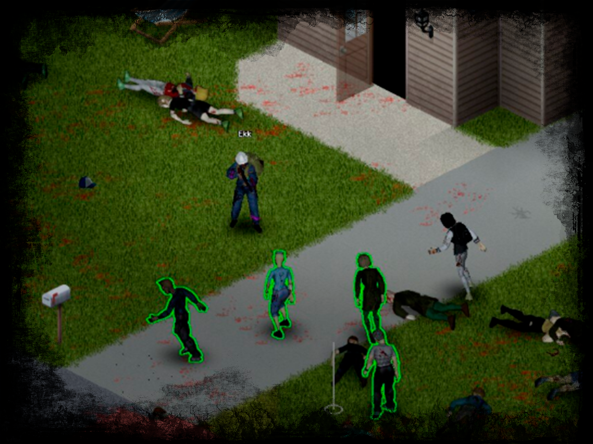
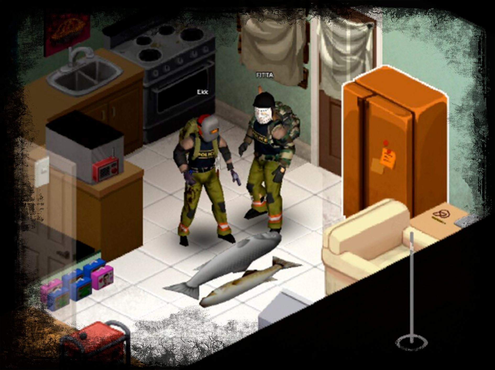
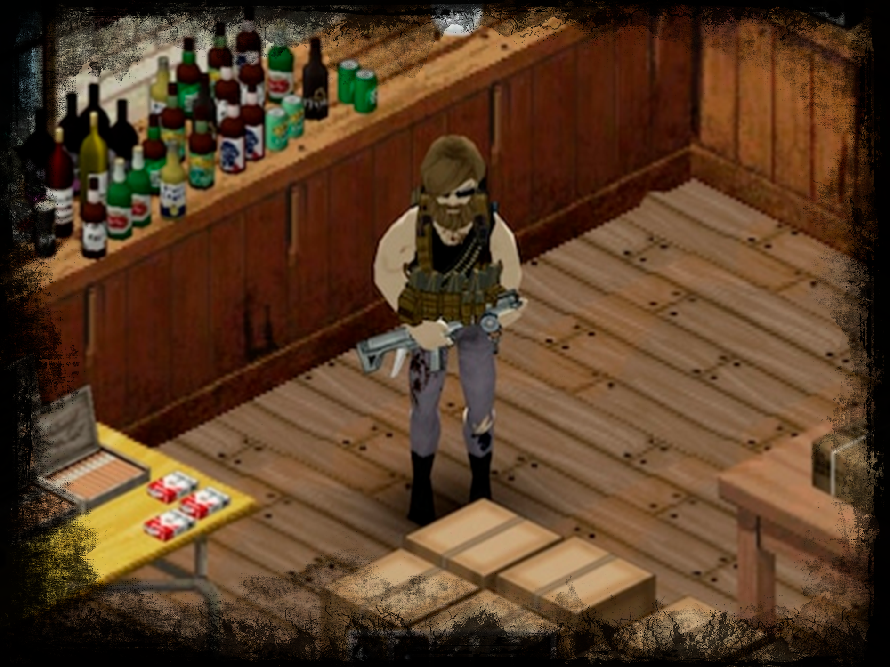
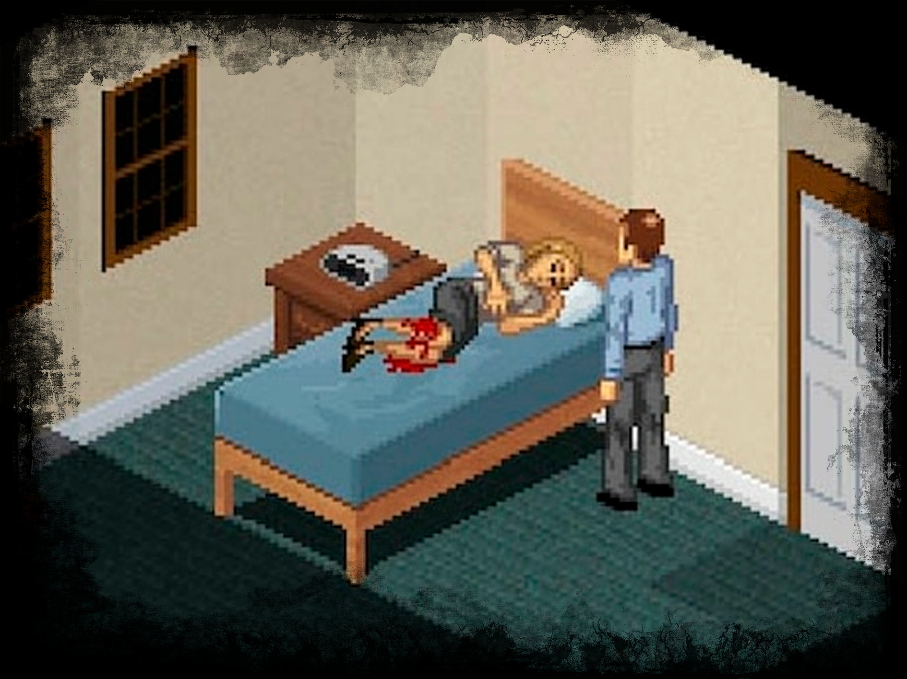
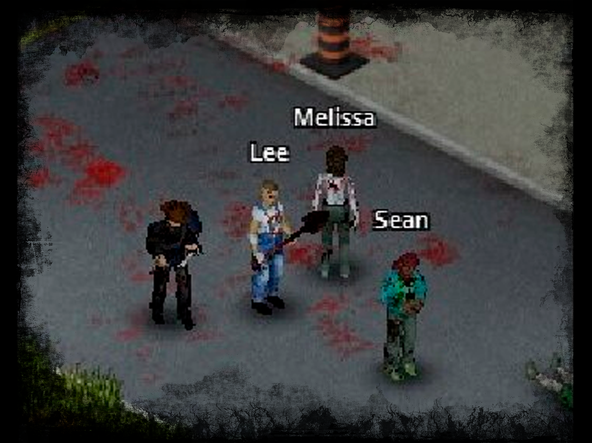

Project Zomboid es un juego de rol de supervivencia de zombis disponible para PC, Mac y Linux.
CARACTERÍSTICAS DEL JUEGO
¡Estas son solo algunas de las características que se pueden encontrar en la versión actual de PZ!

Desarrolla habilidades a través del juego, mientras evitas la depresión, el aburrimiento y las infecciones.

¡Únete a amigos igualmente condenados en servidores creados por usuarios y en pantalla dividida! ¡No confíes en nadie!

Potente compatibilidad con mods de Lua, con mapas y herramientas de desarrollo disponibles para la comunidad.
FUNCIONES PLANIFICADAS
Estas son algunas de las características planificadas, junto con más armas, animaciones, recetas, ubicaciones, sistemas de supervivencia y la introducción de perros. Nos gustan los perros. Ah, y tal vez los militares también aparezcan algún día. ¿Quién puede decir?

PZ HISTORIAS
Nuestras historias de Kate y Baldspot regresarán junto con nuevas tramas. (Jugable en la compilación 0.1.5d)

NPC SOBREVIVIENTES
Encuentros profundos de NPC impulsados por un sistema de metaverso que rastrea la supervivencia fuera de la pantalla.
PLAN DE DESARROLLO
Project Zomboid se actualizará continuamente hasta que alcancemos la lista de funciones que establecimos al comienzo del desarrollo.
La compilación estable se puede encontrar en Steam y GOG, pero a menudo lanzamos compilaciones de prueba pública de las próximas actualizaciones y parches que se pueden descargar al optar por la versión beta "inestable" en Steam. (Cuando es posible, estos también se actualizan como versiones beta de GOG).
Sin embargo, tenga en cuenta que la versión beta inestable puede tener errores: estos lanzamientos son nuestra forma de ampliar nuestro grupo de probadores. Para obtener más información, manténgase al tanto de la sección Actualizaciones de PZ de nuestro foro.